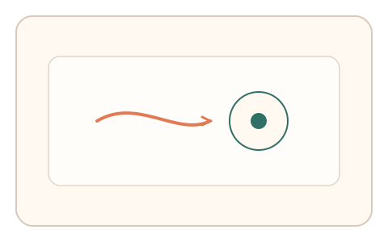
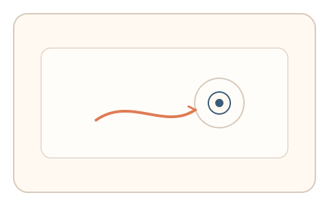
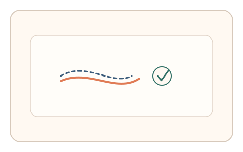

#81
Morphological Analysis - Combination Batches
已扩展
意图路径双段
通过两阶段意图定位任务比较搜索路径与停顿分布的一致性，验证目的驱动的注意力轨迹。
概念原文
第一步给定目标意图让用户完成定位，第二步要求细化选择；系统比较两步中搜索路径与停顿分布的一致性并做异常检测。任务结构为多阶段，信号形态为搜索路径与反应时。
验证“目的驱动的注意力路径”，而非对错判断。
研究背景
人类在目标导向任务中会形成稳定的搜索路径与停顿节奏，两阶段任务能揭示意图一致性。脚本往往缺乏自然的探索与纠偏模式。
核心机制
- 第一阶段让用户完成粗定位或初步选择。
- 第二阶段要求细化或再次确认目标。
- 记录两阶段的搜索路径、停顿与回撤。
- 比较一致性与差异形成判定。
用户流程
- 步骤 1：用户完成第一阶段的意图定位。
- 步骤 2：进入第二阶段进行细化选择。
- 步骤 3：系统比较路径与节奏并判定。
判定信号
搜索路径一致性
真实用户的注意力路径具有目的驱动的稳定性。
停顿与回撤分布
自然探索会出现短暂停顿与修正。
判定逻辑
两阶段路径与停顿分布需保持合理一致性；瞬时直达或完全随机判异常。
对抗面
- 脚本直接点击目标绕过搜索
- 重放真实用户的路径序列
防御与缓解
- 随机化目标与干扰项位置
- 加入动态提示与多目标场景
- 叠加微时序与轨迹信号进行多信号判定
可达性与风险
提供更大目标与键盘导航，允许慢速模式或替代任务。
- 复杂场景可能增加真实用户负担
- 设备差异影响路径分布
可视化状态

状态 1：初步定位
第一阶段完成意图定位。

状态 2：细化选择
第二阶段进行细化选择。

状态 3：路径判定
比较路径与节奏一致性。
参考资料
Visual search
说明目标搜索中的注意力路径与停顿。
Attention
说明目的驱动的注意力机制。